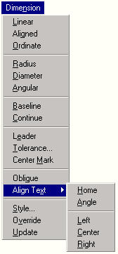

|
AddSubMenu Method |
Adds a submenu to an existing menu.
Signature
RetVal = object.AddSubMenu(Index, Label)
Object
PopupMenu
The object this method applies to.
Index
Variant; input-only
The index location in the menu where the item is to be added.
If an integer is used to specify a given location in the menu, the index must be between 0 and N-1, where N is the number of objects in the popup menu. The new item will be added immediately before the specified index location. To add the new menu item to the end of a menu, set the index to be greater than N.
If a string is specified and the indexed item does not exist, then the new menu item is added at the end of the menu.
Label
String; input-only
The label for the menu item. The label may contain DIESEL string expressions. Labels also identify the accelerator keys (keyboard key sequences) that correspond to the menu item by placing an ampersand (&) in front of the accelerator character.
RetVal
PopupMenu object
The newly created submenu. This new cascading menu is blank, and can be populated with standard menu handling techniques.
Remarks
This method creates a new PopupMenuItem object and adds it to the designated menu. This special kind of PopupMenuItem object is assigned the type of acSubmenu.
In the following example menu, the Align Text menu item has been inserted into the Dimension menu at the 17th index. The Align Text menu item is of the type acSubmenu. All other menu entries in the example are of the type acMenuItem or acMenuSeparator. The small cascading menu that is displayed when Align Text is selected is the new menu that was returned by the AddSubmenu method. It has been populated using the AddMenuItem and AddSeparator methods.

| Comments? |